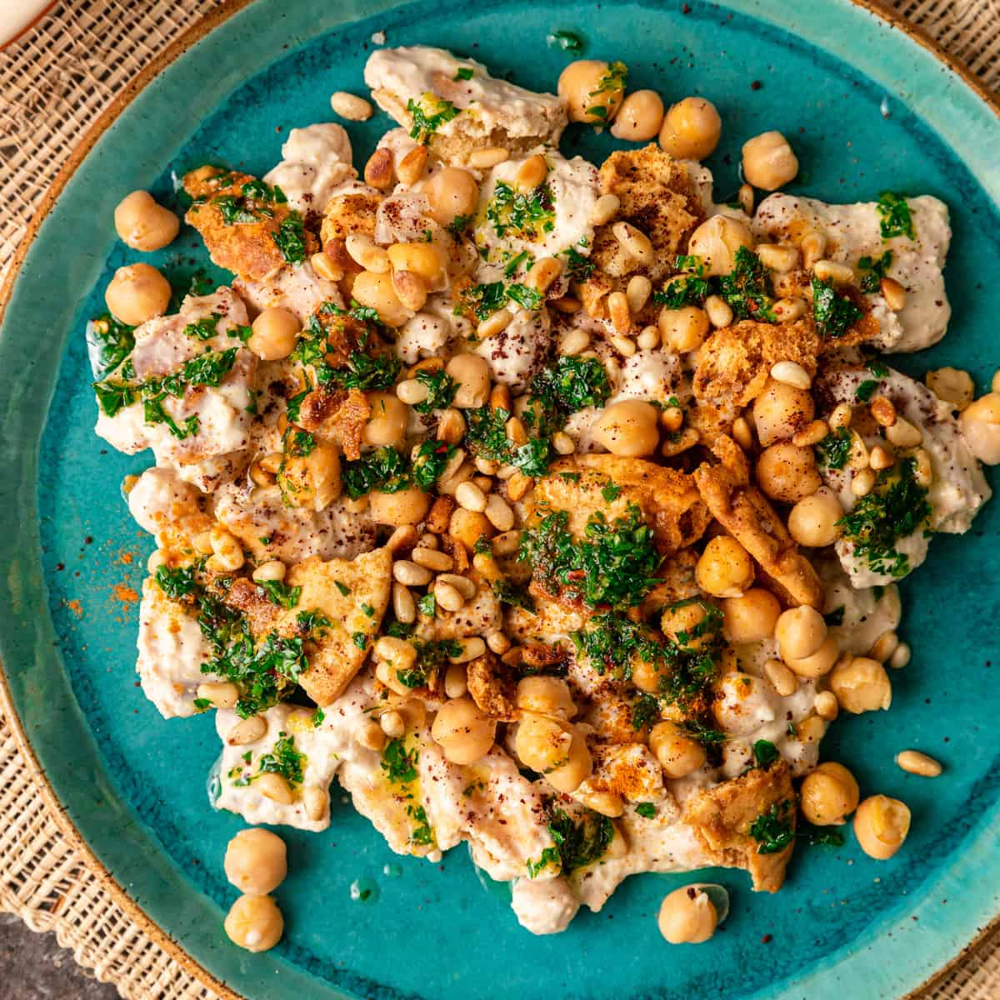

Fatteh is a Levantine specialty made by combining pieces of fresh, toasted, or stale flatbread with numerous other Ingredients. The name of the dish means to tear into small pieces, referring to the process of tearing the flatbread. Fatteh is usually consumed for breakfast or in the evening as the main dish.
Meal prep time : 35 minutes
Servings : 4